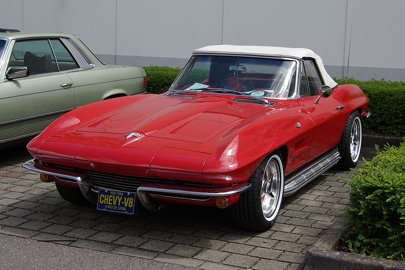
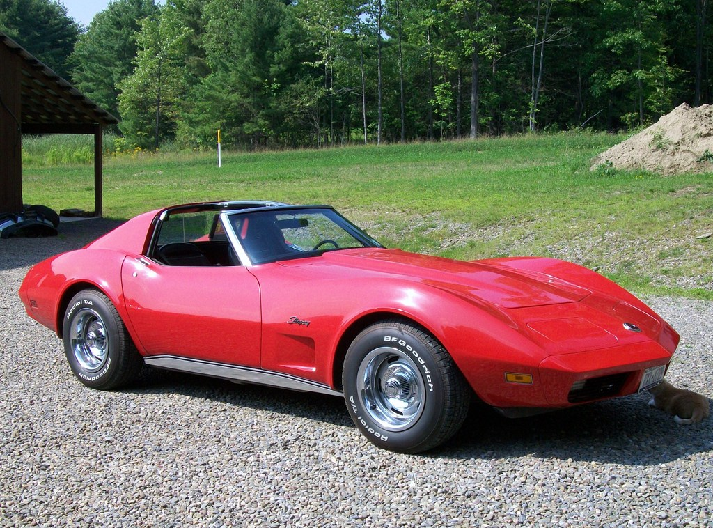
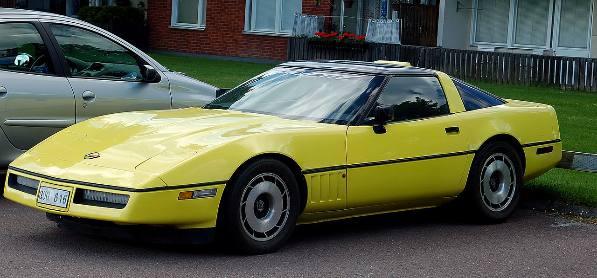
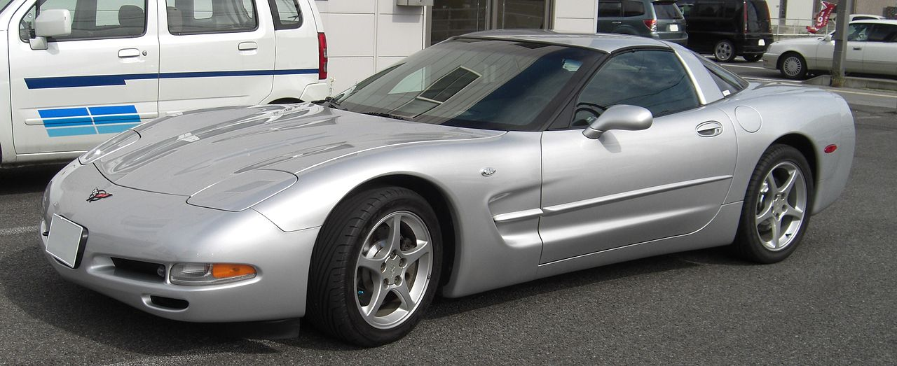
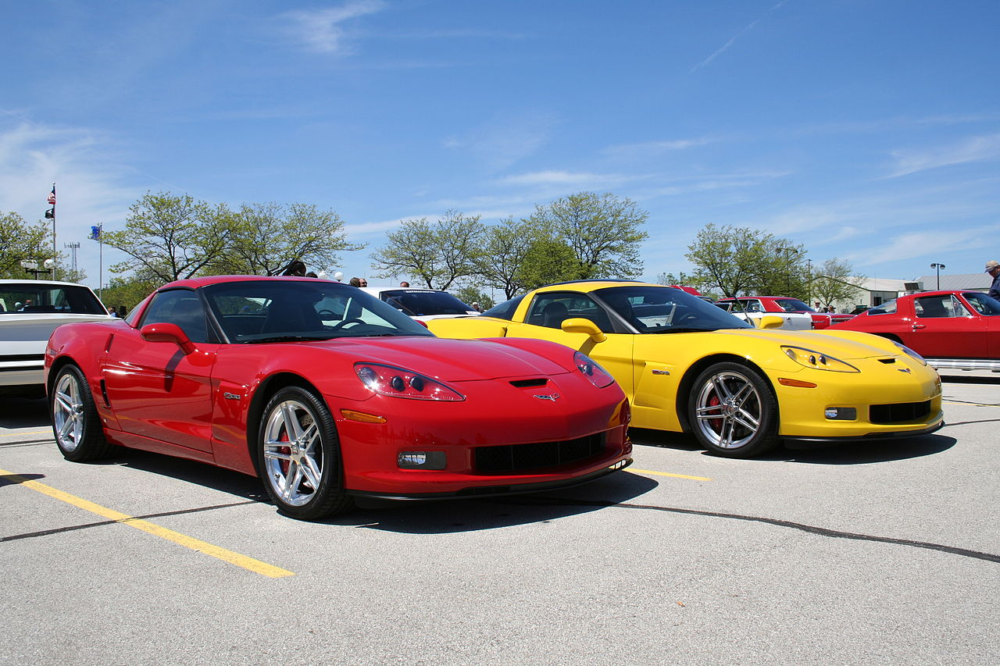
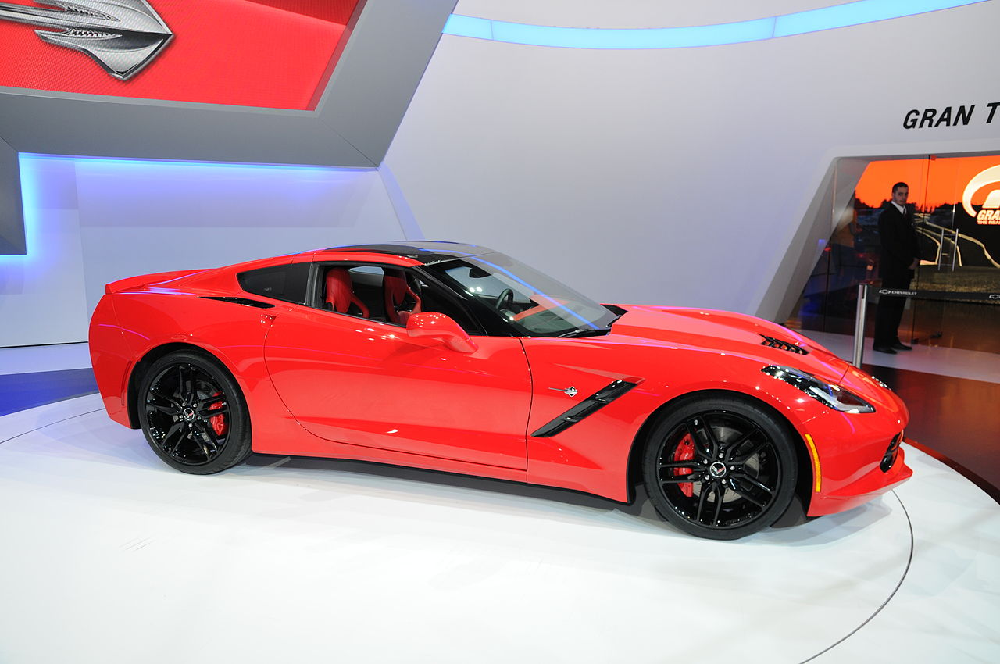

CHEVROLET CORVETTE
History of Corvettes


The first generation of the Corvette (C1) came to fruition in 1953. The C1 came to be after Harley Earl, a General Motors (GM) designer, convinced executives to work on an American sports car as European makes were gaining popularity. The C1 was produced from 1953 (300 initially produced) to 1962. The first model was only sold in polo white with a red interior (as pictured) and were powered a 3.9-liter inline six-cylinder engine with 150 horsepower. The engine size grew as it aged, ending with a 5.4L V8 engine with up to 360hp in 1962 (with optional packages)!
In 1963, GM unvieled the C2 Corvette (1963-1967). Producing 21,513 vehicles, the new C2 featured a standard 5.4L V8 engine with 250 HP. The second generation was also the first Corvette to include the name "Sting Ray." A convertible style was continued to be offered, but this generation was also offered as the first coupe. The 1963 coupe model was the first and only year that had a split-rear window (feature removed due to complaints of obstructed rear view). The 1963 model was also the first to offer the Z06 package. The C2's final year of production boasted a 7.0L 435 HP engine.
The C3 Corvette Stingray came about in 1968, lasting a 14 year run through 1982. It was the first corvette to feature T-Top removable roof panels. The first year's model included a standard 5.4L V8 engine with 300HP and came standard with a three-speed manual gearbox. The C3 was also the first generation to offer a ZR-1 racing package in 1969, which included a more potent four speed transmission,
The C4 corvette was produced from 1983 to 1996. It initially rocked a 205 horsepower 5.7L engine, and ended with a potential a 300-330 horsepower 5.7L engine, depending if you had options or not. This was the Corvette that had the 80s vibe with its digital instruments with respect to its time. The C4 was almost nothing like its predecessor, with a new chassis and a new body design. This generation also saw the convertible come back in 1986, the last one being built in 1975. In the later part of its generation, the C4 introduced the ZR-1 and Grand Sport models for the first time.
Enter the C5 in 1997-2004. The C5 is the first Corvette that really starts looking to what you see on the streets today (with the exception of the new C8 midengine). The C4 body style certainly felt like a prototype for this model's style, as the C5 seemed to just be smoothed out around the rough edges. This model was known for its Hydroformed Frame Rails, which provided a stronger and rigid frame. Base models featured a 5.7L 345 horsepower engine and ended not much different with a 350 horsepower engine in 2001. A Z06 model with a 385 horsepower engine was introduced in 2001, topping out to 405 horsepower by 2002. One of my favorite features of this generation is the introduction of the heads up display on the windshield in front of the driver. You could set up this display to show you your speed, RPM, and other information right on your windshield, removing the need to take your eyes off the road.
The C6 generation ranged from 2005-2013. The base model had a 6.0L 400 horsepower engine, topping out in 2008 with 430 horsepower. The C6 generation had a resemblance to the C5, but Chevy got rid of the pop up headlights for the first time since the C2.The Z06 version of the C6 was powered by a 7.0L engine with an output of 505 horsepower. Chevy took it a step further with the introduction of the ZR1 which had a supercharged 6.2L 638 horsepower engine with a top speed of 205mph!
C7--return of the Stingray. The base C7 corvette packed a 6.2L 455 horsepower engine with standard aluminum frames. Customers had the option of including a Z51 performance package, which addded performance exhaust, bigger rear wheels, among other features, which increased the horsepower to 460. The design was sleek and looked almost like an awesome batmobile. The Z06 was introduced again in the 2015 year, featuring a 6.2L supercharged 650 horsepower engine. The Grand Sport models were also an option in 2017. Finally, the ZR1 model in 2019 clocked 755 horsepower in a 6.2L engine. Wow!
{kind=link}
Wallpaper Source: https://www.wsupercars.com
Images Source: www.wikipedia.com Corvette Pages